00Key terms: Frames, layers, and Context
If Frames and layers feel like the same thing, they are not. A Frame is one entry in a stack that is drawn bottom to top and supplies the current key-routing Context. A layer (scope) is a named bundle of bindings and actions, looked up by ID. A Context's Path lists layer IDs. Frames do not have a numeric z-index, pixels, or a renderer. Only app is a required root; names such as playground or agent come from the demo. Source: runtime.go, model.go, pages.go, input.go, demo.go.
Two different orderings
Frames · draw + input stack
- Frames[2] "confirm" ← top: current Context
- Frames[1] "draft" (modal)
- Frames[0] "page" (base, drawn first)
Model.View draws the active page, then Frames[1:] bottom → top. Ordinary keys use the last frame's Context.
Context.Path · scope precedence
- "field" ← innermost, searched first
- "screen"
- "app" ← required root, searched last
Path is stored outer → inner (["app","screen","field"]). EffectiveBindings overlays the scopes; action handlers are searched inner → outer. This is not a visual stack.
All names above are hypothetical. In the real demo the path also contains an agent scope (["app","playground","agent","notes"]). That is a demo-only intermediate scope shared by the notes and directory inputs, not an AI agent and not a framework special case.
What a Frame holds
A Frame is { id, context, state }. It does not hold a renderer, pixel geometry, or a z-index. Its position in the Frames slice is its stacking order. state holds frame-local values such as scroll position, not all application or editor state. Text, cursor, mode, and history live on the Input, which the Frame's Context refers to by inputId.
Three relationship graphs—not one family tree
Read an arrow as the label on that arrow, not “is a kind of.” Model holds a Runtime pointer; a Page holds a Frame pointer. Neither is an inheritance relationship. “Registry” is a name for an ID-keyed map, not another object above Runtime. “Modal” is the role of a Frame above the base frame, not a separate core type.
1. Storage: who holds what?
Start at Model and follow its Runtime pointer. Runtime keeps several collections side by side—not nested inside one another. This is a selected field map, not every field in either struct. A registered Page retains its own base Frame, even when inactive.



For example, Runtime.Inputs["title"] looks up an Input. That map is the input registry. There is no separate Registry instance between Runtime and Input.
2. Active stack: which page and modals are open?
Hypothetical snapshot: the editor page has draft and confirm modals open. Settings is registered but inactive. The editor Page and Frames[0] point to the same Frame object, not copies. The modals are siblings in the Frames slice; confirm is not stored inside draft.



Pop removes confirm, making draft current. It does not rebuild draft. OpenPage can switch to settings only after both modals close; it then uses settings' existing Frame as the single base frame.
3. Context: how does a frame select scopes and an editor?
Hypothetical context: { path: ["app", "screen", "field"], inputId: "title" }. The path names Layer entries; the input ID names an Input entry. These are two separate lookups, not another stack of windows.



Ordinary key routing starts with this top-frame Context. An explicitly targeted operation can use another context. If no contextual action handles a request, execution falls back to the registered Operation's default handler.
Before, focus, push, pop
Illustrative objects with hypothetical names. Who owns what changes: focus edits the top frame's Context; push adds a frame; pop removes it and the parent's own Context returns unchanged.
// 0. BEFORE
Frames: [
{ id: "page",
context: { path: ["app","screen","a"],
inputId: "a" } }
]
Inputs.a: { text: "hi", mode: "normal" }
// 1. FOCUS b (no frame added)
Frames: [
{ id: "page",
context: { path: ["app","screen","b"],
inputId: "b" } }
]
// only top Context replaced;
// Inputs.a keeps its own text// 2. PUSH modal "draft"
Frames: [
{ id: "page", ...unchanged },
{ id: "draft",
context: { path: ["app","dialog"],
inputId: "d" } }
]
// keys now route via ["app","dialog"]
// 3. POP
Frames: [
{ id: "page",
context: { path: ["app","screen","b"],
inputId: "b" } }
]
// parent context was never cleared,
// so focus returns to "b"Page switching is different again: OpenPage replaces Frames with the new page's retained base frame, and is refused while a modal is open. Current keys use the last frame's context, but ExecuteAt or a Target can name another context, so not every operation is top-only. Real traces: Tab (focus) and Ctrl-N (push).
Glossary
Terms are grouped. Each term has a stable anchor (for example #term-frame, #term-layer) that the other docs link to.
Runtime objects
- Runtime
- The framework core, owned by one event loop. Holds
Frames,Layers,Inputs,Pages,Operations, and the pending key sequence.runtime.go. - Model
- The Bubble Tea adapter around a Runtime:
Updatereceives keys andViewdraws.model.go. - Page
- A top-level screen. It retains its base Frame and a render callback.
OpenPageswapsFramesto that frame.pages.go. - Frame
One
{ id, context, state }entry inRuntime.Frames. The slice order is both draw order (bottom → top) and input routing: the last frame's Context is the current one. It holds no renderer, pixels, geometry, or numeric z-index.- Modal
- A Frame pushed above the page by
Push(the built-inmodal.pushoperation). While one is open,OpenPageis blocked.modal.popremoves the top one. See Flow 2. - Registry
- A lookup map keyed by ID:
Layers,Inputs,Pages,Operations. A registry says what exists. It does not order anything.
Scope and focus
- Layer / scope
A named scope
{ id, noun, bindings, actions }stored in theRuntime.Layersregistry. It is not a visual layer and has no z-order. A layer only matters when a Context's Path names it.- Context
- Where input goes:
{ path, inputId }. Each Frame carries one.Runtime.Context()returns the top frame's. - Path
- Ordered layer IDs, outer → inner, always rooted at
app. Set explicitly when a frame or input is registered; the runtime does not infer it from the UI structure.EffectiveBindingsoverlays scopes, and action handlers are searched inner → outer. See two lookup directions. - Focus
- Replacing the top frame's Context with a registered input's path and ID. No frame is pushed. See Flow 1.
Input and editing
- Input / InputID
- An
Inputowns text, cursor, mode, and history. A Context refers to it byInputIDand never holds a copy.input.go. - Mode
- The focused input's editing mode, such as
normal,insert, or a visual mode. Without an input, the runtime uses the top frame'sstate.mode, elsenormal. Bindings can be restricted to a mode. - Pending vs editor grammar
- Runtime.Pending holds a partly typed binding sequence. Editor grammar uses the Input's own state for counts and operators. An unfinished editor command can consume a key before binding resolution; otherwise unhandled binding keys can fall through to the editor. See before binding resolution.
Bindings and operations
- Binding / key sequence
- A
{ mode, keys, request }entry.keysmay be one key or a sequence such asg g. Ambiguous prefixes wait for a timeout. See the sequence stepper. - Request
- What a binding produces:
{ verb, noun, target, args }, keyed asnoun.verb. - Operation / action / Handler
- An Operation is a registered
noun.verbwith parameters and a defaultRun. A layer action is a layer's own Handler for that key, which wins when found while searching inner → outer. AHandlerhas signaturefunc(*Runtime, Context, Arguments) (any, error). - Verb / noun
- A request's verb is the action (
push,pop) and its noun is the target kind (modal). Dispatch looks up the completenoun.verbkey in each contextual layer's Actions; it does not filter those layers by theirNounfield.
Drawing
- View / render / compositor / viewport
Model.Viewbuilds the screen: it renders the active page's content through a viewport (scrolling kept in the base frame's state), then draws each modal inFrames[1:]over it usingComposeModal. A renderer produces content; the compositor combines surfaces; a viewport bounds and scrolls content.model.go.
Next: the architecture overview and the interactive architecture map link back to these terms.
01The shared pipeline
The framework owns state and dispatch. The demo defines its pages, inputs, and bindings. Tab and Ctrl-N follow the same five steps below. The sandbox uses its own Update and View, but shares the runtime's matching and execution.
- 1 · Bubble TeaA
tea.KeyMsgreachesUpdate. - 2 · Adapter
Model.dispatchKeychecks macros, palette, and input grammar. - 3 · Runtime
HandleBindingbuilds the sequence and matches it. - 4 · Execute
ExecuteAtfinds a layer action or the operation'sRun. - 5 · StateThe handler changes runtime state (a context, a frame, input text, a page), then
Viewrenders.
Runtime and Model
Owns Context, Frames, Pending, HandleBinding, ExecuteAt, and the built-in modal.push operation.
NewDemo
Owns the page names, the input IDs directory, notes, and dialog, the input.next handler, and the tab and ctrl+n bindings. The comment at demo.go:12 says the framework requires none of these names.
Context.Path is not Frames
Context says where input goes: an ordered list of layer IDs from app to the innermost layer, plus an optional focused InputID. Frames is the visual and interaction stack: the page frame first, then each open modal, drawn bottom to top. Each frame carries its own Context, so the last frame also decides where keys go. The runtime's current context is the context of the last frame. Full glossary.
type Context struct {
Path []string `json:"path"`
InputID string `json:"inputId,omitempty"`
}
type Frame struct {
ID string `json:"id"`
Context Context `json:"context"`
State map[string]any `json:"state"`
}
func (r *Runtime) Context() Context { return r.Frames[len(r.Frames)-1].Context.Clone() }
Where Model.Update hands off
Model.Update splits ordinary multi-rune key messages into single keys, then calls dispatchKey. The call to HandleBinding comes after the macro, palette, paste, and in-progress input-grammar checks. See which interaction gets each key first.
err := m.dispatchKey(MacroKey{Key: v.String(), Paste: v.Paste})
...
handled, err := r.HandleBinding(key.Key)
if handled || err != nil {
return err
}
if key.Key == "esc" && len(r.Frames) > 1 && r.Mode(r.Context()) == "normal" && (in == nil || in.Pending == "" && in.Count == 0) {
_, err = r.Execute(Request{Verb: "pop", Noun: "modal"})
return err
}
_, err = HandleInputKey(r, key.Key)
A key that no binding handles falls through to HandleInputKey, which is the text editor. Both flows below are handled earlier, at HandleBinding.
01aBefore binding resolution
The framework does not send every key straight to your configured bindings. It first checks whether an active interaction needs that key. A register prompt, an open palette, a paste, or an unfinished editor command can take priority over the ordinary binding path.
Model.dispatchKey, not assembled from layers.-
A macro command may be waiting for a register
In normal mode, press q to begin recording, then a to choose register
a. The second key answers the register prompt. It should not trigger an unrelated binding fora.Illustrative state · simplified JSbefore = { macroPending: "q" } keypress = "a" after = { recordingInto: "a" }A replay command can also wait for a register. The early macro check handles that pending choice or a recording-stop key. It does not consume every key while recording: ordinary recorded keys continue through dispatch.
-
An open palette takes over routing
If the palette is active,
dispatchKeycallsPalette.HandleKeyand returns. The key does not continue through the ordinary page-input path.This does not disable configured bindings. The palette handler calls
Runtime.HandleBindingitself, using the palette's active context, before its navigation and editor handling.Palette.HandleKey, binding checkpalette.go:478-482 if handled, err := p.r.HandleBinding(key); handled || err != nil { p.collectEditors() p.publish() return handled, err } -
A paste is text, not a series of shortcuts
On the ordinary page-input path, a paste goes directly to
HandleInputKey. Pastinghelloshould deliver text to the editor, not execute bindings forh,e, and the remaining letters.Paste bypass in dispatchKeymodel.go:138-141 if key.Paste { _, err := HandleInputKey(r, key.Key) return err }The palette branch comes earlier. This paste bypass describes the ordinary page-input path, not a guarantee about the palette's separate handler.
-
An unfinished editor command gets first chance to finish
“Input grammar” means the editor's rules for commands and counts, such as
d wand3 j. Suppose the editor has already accepted d as a delete operator, and the app also has a shortcut for w.Illustrative state · simplified JSappBinding = { keys: "w", action: "switch-page" } editor = { mode: "normal", pending: "d" } keypress = "w" // The editor gets first chance: result = "complete d w: delete a word" // Not: interrupt the command to switch pages.If
Input.PendingorInput.Countis set, the input handler gets the key before the configured bindings. Dispatch stops if that handler reports the key handled or returns an error. Otherwise, resolution continues.This priority applies to an already-started command. A fresh key still reaches configured bindings before ordinary editor handling. The condition also covers an app-level macro count when no input is focused.
-
Now the ordinary path resolves configured bindings
Runtime.HandleBinding(key.Key)resolves the effective bindings and any pending binding sequence. A handled key stops here. It does not also become editor input.If binding resolution does not handle the key, the router checks whether normal-mode Escape should close a modal. Otherwise, it falls back to
HandleInputKey.
Two different meanings of “pending”
| State | What is underway? | Who gets the next key? |
|---|---|---|
Input.Pending / Input.Count | An editor command, such as d or the count 3. | The input editor gets first chance. |
Runtime.Pending | A configured sequence, such as the first g of g g. | The binding resolver handles it when routing reaches HandleBinding. |
The timed binding resolver tracks its own pending sequence and completed fallback. That state is separate from the editor's unfinished operator or count. The routing examples here do not change the timeout rules described later in this guide.
Source links in this section pin the published 4938b93 router. The routing order and quoted checks remain present in the current code; the newer revision also handles binding-timeout messages in Model.Update.
02Two lookup directions
Bindings and handlers resolve in opposite directions. The difference matters when two layers define the same thing.
Outer → inner, last write wins
EffectiveBindings walks Context.Path from app inward. For each layer it writes the mode-less bindings into a map keyed by the full key sequence, then the bindings for the current mode. The innermost layer writes last, so it overwrites.
Inner → outer, first hit wins
ExecuteAt walks the path from the end back to app and runs the first layer whose Actions map has the key noun.verb. If no layer has one, it runs the operation's registered default Run.
for _, id := range c.Path {
layer := r.Layers[id]
for _, b := range layer.Bindings {
if b.Mode == "" {
byKey[b.Keys] = b
}
}
for _, b := range layer.Bindings {
if b.Mode == mode && b.Mode != "" {
byKey[b.Keys] = b
}
}
}
for i := len(c.Path) - 1; i >= 0; i-- {
if fn := r.Layers[c.Path[i]].Actions[q.Key()]; fn != nil {
return fn(r, c, q.Args)
}
}
return op.Run(r, c, q.Args)
The demo uses this split for selection.inspect. The registry default at demo.go:93-96 reports app. The layers playground, agent, and directory override it at demo.go:97-103.
g g replaces another binding for g g and leaves g alone (runtime.go:297).03Flow 1 · Tab moves directory → notes
Starting point. The user is on the Playground page with the directory field focused. The demo registers that page's frame with that context at demo.go:45, and OpenPage installs the frame as Frames (pages.go:50-62).
// BEFORE
Frames: [{
id: "playground",
context: {
path: ["app","playground",
"agent","directory"],
inputId: "directory"
}
}]
Runtime.Pending: ""// AFTER
Frames: [{
id: "playground",
context: {
path: ["app","playground",
"agent","notes"],
inputId: "notes"
}
}]
Runtime.Pending: ""-
The user presses Tab
Bubble Tea sends a
tea.KeyMsgwhoseString()is"tab".Model.Updatepasses it todispatchKey(model.go:81-102). -
The adapter lets it through
No macro is pending, the palette is closed, the key is not a paste, and the
directoryinput has no pending grammar. So the checks at model.go:128-149 do not return, and the call at model.go:150 runs. -
The runtime finds an exact match
Pendingis empty, sosequenceis"tab".EffectiveBindingsincludes the playground binding below. It has no mode, so it applies in every mode. Tab is complete with no longer continuation, so the matcher clears pending state and executes immediately.Demo bindingdemo.go:135 bind("playground", "", "tab", "next", "input", nil)HandleBinding: complete match with no longer continuationbindings.go:140-144 if matched { r.CancelPendingBinding() _, err := r.Execute(exact) return true, err } -
ExecuteAt chooses the handler
The request key is
input.next. No layer on the path has anActions["input.next"]entry, so the loop at runtime.go:235-240 falls through to the registeredRun. That is the demo's handler. -
The demo handler picks the next field
The handler refuses to run unless the active page is
playgroundand no modal is open. It finds the currentInputIDin the ordered list, addsdelta(default 1), wraps, and callsr.Focus.input.next handlerdemo.go:77-92 ids := []string{"directory", "notes", "paths"} ... index = ((index+IntArg(a, "delta", 1))%len(ids) + len(ids)) % len(ids) err := r.Focus(ids[index]) -
The runtime rewrites the top frame's context
Focuslooks up the input's registered path, validates it, and replaces the top frame'sContext. No frame is pushed, soFrameskeeps its length of 1. OnlyContext.PathandInputIDchange.Runtime.Focusruntime.go:175-187 next := Context{Path: path, InputID: id} if err := r.validateSelection(next); err != nil { return err } r.Frames[len(r.Frames)-1].Context = next.Clone() r.Pending = "" -
The view follows the context
HandleBindingreturnshandled = true, so the key never reaches the text editor. On the nextView, the playground page rendersnotesas the active field (demo.go:169-190). The path tonotesis registered at demo.go:23.
Who did what. The framework matched the key, ran the handler, and moved focus. The demo decided that directory, notes, and paths form a cycle.
04Flow 2 · Ctrl-N opens the draft modal
Starting point. The user is in the notes field, in normal mode. A new input starts in "normal" mode (input.go:37). This matters: the binding below only exists in normal mode.
// BEFORE
Frames: [
{ id: "playground",
context: {
path: ["app","playground",
"agent","notes"],
inputId: "notes" } }
]
Mode(ctx): "normal"
Runtime.Pending: ""// AFTER (frame pushed)
Frames: [
{ id: "playground", ...unchanged },
{ id: "draft",
context: {
path: ["app","dialog"],
inputId: "dialog" } }
]
Runtime.Pending: ""-
The user presses Ctrl-N
The key string is
"ctrl+n". The adapter reachesHandleBindingthe same way as in flow 1, becausenoteshas no pending grammar. -
The binding exists only for normal mode
The binding lives on the
playgroundlayer with mode"normal".EffectiveBindingsadds it in the second pass over that layer, becauseMode(c)equals"normal". In insert mode the binding would be absent.Demo bindingsdemo.go:141-142 bind("playground", "normal", "ctrl+n", "push", "modal", Arguments{"id": "draft", "input": "dialog"}) bind("dialog", "normal", "ctrl+n", "push", "modal", Arguments{"id": "nested-draft", "input": "nested-dialog"})The second line explains why Ctrl-N inside the draft nests a second modal. The
dialoglayer is not on thenotespath, so it does not apply yet. -
Exact match, then Execute
ctrl+nis complete with no longer binding, so it is not deferred. HandleBinding clears pending state and callsExecutewithmodal.pushand argumentsid: "draft",input: "dialog". -
The handler lookup falls to the registry default
No demo layer defines an action for
modal.push.ExecuteAtvalidates the arguments, then runs the built-inRunfromregisterCore. This time the framework supplies the handler too.modal.push operationruntime.go:435-443 id := StringArg(a, "input", "") path, ok := r.InputPaths[id] if !ok { return nil, errors.New("unknown modal input") } err := r.Push(&Frame{ID: StringArg(a, "id", ""), Context: Context{Path: path, InputID: id}, State: map[string]any{}}) -
Push adds a frame
The new frame's context comes from the input's registered path. The demo registered
dialogwith path["app","dialog"](demo.go:25).Pushrejects a duplicate frame ID, validates the context, appends, and clearsPending.Runtime.Pushruntime.go:188-207 r.Frames = append(r.Frames, frame) r.Pending = "" return nil
-
The view draws the modal over the page
r.Context()now returns thedialogcontext, so the next key resolves against["app","dialog"]. The page frame stays underneath, unchanged. The demo registered thedraftmodal's title and renderer at demo.go:57-70.
Context.Path and left Frames at length 1. Ctrl-N changed Frames to length 2 and left the page frame's context alone. Different structures, same pipeline.05Flow 3 · A configured g g in the sandbox
This flow does not use NewDemo, Model.Update, or the default demo bindings. The ochazuke keybinding command builds its own keybindingModel around a fresh NewRuntime() (keybinding.go:178-179). Its Update is a separate dispatcher that calls the same Runtime.HandleBinding.
Assumed configuration. The user configured the binding g g with action go-top, either in setup or with --bind 'g g=go-top'. This is a configuration choice for the example. It is not a default.
How the configuration becomes a binding
installBinding normalizes the key string, registers an operation with verb go-top and noun sandbox, and appends a binding to the app layer. The operation's Run only records "ACTION: go-top" in the results ring. It moves nothing.
keys, action := strings.Join(strings.Fields(spec.Keys), " "), strings.TrimSpace(spec.Action)
op := ochazuke.Operation{
Verb: action, Noun: "sandbox",
Run: func(_ *ochazuke.Runtime, _ ochazuke.Context, _ ochazuke.Arguments) (any, error) {
m.results[(m.count-1)%keyHistorySize] = "ACTION: " + action
return action, nil
},
}
if _, exists := m.runtime.Operations[op.Key()]; !exists {
m.runtime.Register(op)
}
layer := m.runtime.Layers["app"]
binding := ochazuke.Binding{Keys: keys, Request: ochazuke.Request{Verb: action, Noun: "sandbox"}}
runtime.Layers.app.Bindings: [
{ mode: "", keys: "g g",
request: { verb: "go-top", noun: "sandbox" } }
]
runtime.Frames: [{ id: "main", context: { path: ["app"] } }] // from NewRuntime
runtime.Pending: ""
Where this dispatcher differs
| Step | Demo app | Sandbox |
|---|---|---|
| Entry | Model.Update | keybindingModel.Update |
| Pre-checks | Macros, palette, input grammar | Records history, rejects paste, then calls the runtime |
| Binding call | r.HandleBinding | m.runtime.HandleBinding |
| After a miss | Falls through to HandleInputKey | Records unmatched |
| Frames | Page frame plus modals | One main frame, never pushed |
First g: the prefix is stored
-
The user presses g
keybindingModel.Updatedelegates tohandleKey, which appends"g"to history and sets the result to"unmatched". It then calls Runtime.HandleBinding. -
No exact match, but a prefix match
sequenceis"g". No binding has exactly those keys, so there is no completed fallback. The longer binding"g g"starts with"g ". The runtime stores the pending prefix and deadline. The sandbox schedules the returned timer command; if no continuation arrives, this pure prefix clears without running an action.HandleBinding: storing a prefix and its deadlinebindings.go:121-138 if longer { if r.Pending == "" { r.pendingBinding.context = r.Context() r.pendingBinding.frame = r.Frames[len(r.Frames)-1] r.pendingBinding.mode = r.Mode(r.pendingBinding.context) } if matched { r.pendingBinding.fallback, r.pendingBinding.hasFallback = exact, true } timeout := r.BindingTimeout if timeout <= 0 { timeout = DefaultBindingTimeout } r.Pending = sequence r.bindingVersion++ r.pendingBinding.deadline = time.Now().Add(timeout) r.pendingBinding.scheduled = false return true, nil -
The sandbox reports the pending state
Back in
Update,m.runtime.Pending != ""is true, so the history row readspending: g.Sandbox result and timer schedulingcmd/ochazuke/keybinding.go:93-102 handled, err := m.runtime.HandleBinding(msg.String()) switch { case err != nil: m.results[index] = "error: " + err.Error() case m.runtime.Pending != "": m.results[index] = "pending: " + m.runtime.Pending case handled && m.results[index] == "unmatched": m.results[index] = "sequence cancelled" } return m.runtime.BindingTimeoutCommand()
runtime.Pending: "" → "g" results[0]: "pending: g" Frames, Context.Path: unchanged
Second g: the full sequence matches
-
The user presses g again
Pendingis"g", sosequencebecomes"g" + " " + "g", which is"g g". -
Complete match, nothing longer
"g g"is complete and no longer binding extends it, so it runs immediately:Pendinggoes back to""andExecuteis called withgo-top.sandbox. Any timer scheduled by the first g is now stale and does nothing when it arrives. -
The registry default runs
The
applayer has noActionsentry forgo-top.sandbox, soExecuteAtcalls theRunthatinstallBindingregistered. It writes"ACTION: go-top"into the latest history slot.Pendingis empty, so theswitchfalls to no case, and the row keeps theACTIONtext.
runtime.Pending: "g" → "" results[1]: "ACTION: go-top" history: ["g", "g"] // newest first in the right-hand column
Timed longest match: when g, g g and g g g are all bound
The walkthrough above binds only g g, so the first g is a pure prefix. If a complete binding is also a prefix of a longer one, the runtime now defers it instead of running it at once. The timeout defaults to 1000ms and is set with --timeout or t in setup.
- Defer. With
g,g gandg g gbound, the first g is complete but ambiguous. It is stored as the fallback and a timer is scheduled. The second g is a valid continuation: it refreshes the timer andg gbecomes the fallback. The third g has no longer continuation, sog g gruns immediately. - Timeout. The timer arrives as a Bubble Tea message, so the runtime is only mutated inside
Update. On timeout the longest completed fallback runs. A pure prefix with no completed fallback clears without running; the sandbox showssequence timed out. The outcome is written to the last key row; no key is invented. - Mismatch with a fallback. After g, the key x forms
"g x", which matches nothing. The completed fallbackgruns and x is consumed. - Mismatch without a fallback. If nothing complete was deferred (for example a pure prefix such as
g galone), the pending state clears and the mismatching key is retried on its own, as before. - Escape. Esc cancels all deferred work: pending keys, fallback, and timer. The sandbox shows
sequence cancelled. Timer events from a cancelled or superseded wait are stale and do nothing. F2, entering the sandbox, and configuration changes also cancel (CancelPendingBinding).
Runtime.BindingTimeout in embedded applications; the default is 400ms.06Sequence stepper
This stepper is a small illustration written in JavaScript. It does not run the Go code and has no real clock. It mirrors the timed longest-match rules for three bindings, g → single, g g → double, and g g g → triple. The Advance timeout button stands in for the timer firing; it is an illustration control, not live Go. Without JavaScript, the three flows above carry the same information.
- Pending before
- ""
- Key
- none
- Sequence tried
- none
- Fallback
- none
- Pending after
- ""
Press g to start. Nothing has happened yet.
- Press g three times. The first two presses defer (
single, thendoublebecome the fallback). The third has no longer continuation, sotripleruns. - Press g, g, then Advance timeout. The fallback
doubleruns. - Press g, then x.
g xfails, the fallbacksingleruns, and x is consumed. - Press g, then Esc: everything deferred is cancelled and nothing runs. (Every prefix of these bindings is itself complete, so the stepper cannot show the no-fallback retry; the section above describes it.)
07Source index
This page describes the local timed resolver. GitHub links pin the published core at 527d680 for the original demo, scope lookup, and frame behavior. Current matcher and sandbox excerpts link to local source files with line labels, because those changes have not been pushed.
| Topic | Location |
|---|---|
Context, Frame, Runtime | runtime.go:30-89 |
Focus, Push, Pop | runtime.go:175-215 |
ExecuteAt | runtime.go:216-241 |
EffectiveBindings | runtime.go:297-320 |
HandleBinding and timeout delivery | bindings.go:30-152 |
modal.push operation | runtime.go:435-443 |
Model.Update, dispatchKey | model.go:70-160 |
| Default app bindings | model.go:56-66 |
| Demo inputs and paths | demo.go:22-26 |
Demo input.next handler | demo.go:77-92 |
Demo tab and ctrl+n bindings | demo.go:135, 141-142 |
OpenPage | pages.go:50-62 |
keybindingModel.Update and key dispatch | keybinding.go:39-119 |
installBinding | keybinding.go:230-256 |